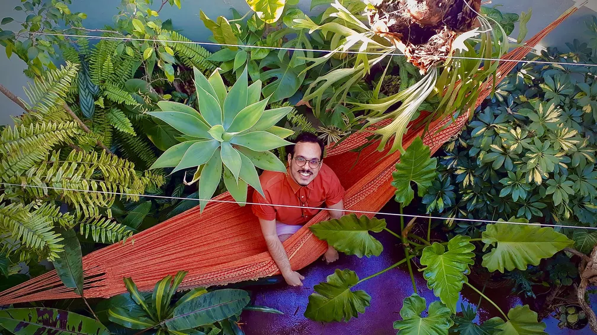

Durante o ano de pandemia, em 2020, o setor de plantas e flores fechou com crescimento de 10% no faturamento, movimentando R$ 9,6 bilhões em todo o Brasil, segundo Instituto Brasileiro de Floricultura (Ibraflor). Para 2021, a expectativa é de crescimento de até 5%.
Vendedores de plantas e flores reforçam o que dizem os números e afirmam que a busca pelos produtos cresceu com a pandemia.
Por outro lado, especialistas da área psiquiátrica falam que o cultivo como hobby pode ajudar na saúde mental em tempos de restrição, uma vez que o Brasil é um dos países com maior aumento de diagnóstico de depressão e ansiedade, no último ano.
O arquiteto Gabriel Botasso sempre gostou de plantas e começou o cultivo em 2019. Durante a pandemia, ele expandiu a coleção. Atualmente, são quase 100 vasos em casa.
O espaço verde com plantas bem cuidadas que o arquiteto tem em casa nem sempre foi assim. Gabriel conta que, no começo, algumas morreram, já que ele não tinha muito conhecimento sobre o assunto.
Agora, quase um expert no assunto, o arquiteto disse que o cuidado com as plantas tem ajudado a passar o tempo e a ocupar a mente.
"É uma questão de companhia. É algo para você cuidar. Como eu moro sozinho, cuidar das plantas é um hobby a mais. Isso me ajudou durante o isolamento. Faz a diferença você ter esses pequenos momentos",disse. 
A proprietária de uma loja de plantas em Ponta Grossa, nos Campos Gerais do Paraná, Cristina Hubner explica que o primeiro passo antes de comprar uma planta é escolher um lugar da casa ou apartamento para deixá-la.
A dica é importante, já que há plantas que se dão melhor em lugares com sombra, enquanto outras preferem a luz do Sol.
Espécies com folhas mais claras precisam de mais iluminação. Já as mais escuras suportam melhor na sombra.
Além disso, analisar as características da espécie escolhida é essencial para o cuidado.
Cristina também passou algumas dicas para cuidar bem das plantas. Veja a seguir:
Checar a frequência da necessidade de água: afunde o dedo na terra até 1 cm. Se sair seco, significa que é hora de regar. A quantidade de água depende da espécie.
Usar substratos de boa qualidade: adubos químicos precisam ser colocados pelo menos uma vez por mês, enquanto os orgânicos precisam de intervalos maiores.
Tirar folhas secas: esse tipo de poda evita a proliferação de doenças.
A pandemia acentuou problemas de ansiedade e depressão em todo o mundo.
Um estudo da Universidade de Ohio, em parceria com universidades de 11 países, apontou que o Brasil registrou o maior aumento no número de diagnóstico dessas doenças, na pandemia.
O médico psiquiatra e vice-presidente da Associação Paranaense de Psiquiatria, Glauber Kaio, disse que criar formas de se distrair durante o período de isolamento pode ajudar na saúde mental.
Segundo o profissional, o fato das pessoas não saberem quando a pandemia irá acabar gera incertezas e angústia. Além disso, o medo da morte também está mais evidente por causa da Covid-19.
"A pandemia contribuiu para impactar a nossa saúde mental, principalmente em pessoas que são mais suscetíveis a uma depressão ou ansiedade. Questões econômicas e o desemprego também podem causar esse impacto", explicou.
O médico também receitou algumas dicas para proteger a saúde mental em tempos de pandemia. Confira abaixo:
Ter rotina para o trabalho: nos casos de home office, o ideal é delimitar bem as atividades de casa e do emprego.
Ter horário certo para dormir: o sono é um fator que pode atrapalhar ou combater qualquer tipo de transtorno mental. Por isso, é importante ter cuidado com substâncias estimulantes, como cafeína e álcool.
Cuidar da alimentação: fixar horários para se alimentar, priorizando uma alimentação saudável.
Manter rotina de exercícios físicos: os riscos de ansiedade ou depressão podem ser reduzidos em até 40% com atividades de intensidade moderada com duração entre 15 e 30 minutos.